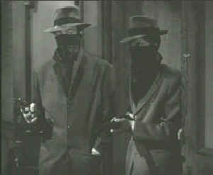

|
Railroaded/C+,C
|
|
Kino/1947/74m/FS
1.33/BW
|
Railroaded is merely a warm-up for director Anthony Mann
on his way to some dark and neat "B" films in the late
forties. Meager production values are not the problem. A dicey
script, with some ham-hock acting in the pot, keeps Railroaded
from serving up a first class movie meal.
 |
| Stick
'em up girls. ©Kino |
John Ireland is tough guy Duke Martin, a cheap hood looking to skim
off some of the bosses lute. Instead of making his usual
collection at a small betting operation run by front beautician
Clara Calhoun, Martin dons a mask and with a partner holds
up the place. Plans go awry when Calhoun's assistant screams in
fear and a cop arrives. Shots are exchanged, the cop is killed
and Martin's partner goes down. The camera lets you know
something suspicious is going on here between Martin and
Calhoun.
Before you can say Anthony Mann, young
delivery man Steve Ryan is picked up for the robbery and murder
of the cop. Detective Mickey Ferguson, a former neighbor of the
accused is assigned to the case. It's tough for him to keep his
mind on the clues with Steve's pretty sister Rosie batting her
eyelashes and proclaiming Steve's innocence. The predictable
script leaves little doubt that Ferguson will butt heads with
Martin, the bad guys will fall and Rosie will get her brother
back and a boyfriend in the bargain.
With Mann behind the camera,
Ireland does all right polishing his tough guy act, but Sheila
Ryan has a tough time of her own, playing the sister of the man
accused of the cop-killing. Ryan has to make with like girl
detective. It's too much to ask. Hugh Beaumont is a strange
choice for detective Ferguson, seeming out of place doing cop
work. Jane Randolph plays shady Clara Calhoun with lots of
enthusiasm.
The Mann noir look is evolving here.
There are plenty of shadows and atmospheric lighting, but it
lacks the subtlety of his later films. Railroaded is
clearly a minor film, and without great expectations, you can
have a good time sitting through it.
Don't expect much from this DVD
transfer. The first big problem is many soft focus scenes. No,
it's not totally out of control, but either the existing
elements. The credit sequence looks better than the rest of the
film. A tad more contrast and certainly sharper elements would
have made Railroaded a more pleasurable experience.
Shadow detail is all right, but blacks do not achieve optimum
density. There's plenty of wear on the elements too, with
scratches and dirt and errant splices, but you can still
enjoy the DVD. The sound is scratchy and there's low level hum,
fortunately not very prominent. Dialogue is clear and the lurid
music is in balance. |

The Feature
Archive has articles
ranging from A
Western is a Western is a Western to Screen
Voices, The
Heistmasters, Akira
Kurosawa, film preservationist Robert
Harris and Shawshank Redemption director Frank
Darabont.

Hail, Hail, The Gang's in Hollywood. Click on the
poster to read about Hollywood gang films.

Check out the Movie
Poster Archive for
short bios and images of Susan Hayward, Kirk Douglas, Katharine
Hepburn and many more. This month's featured star is Clark
Gable.

DVD
Verdict
They may be
judgmental, but that's the point, isn't it. Lots of DVD reviews
plus news and more
Home Theater
Reference Reviewing System

When you read a DVD review it's of utmost
importance to know what equipment is being used to evaluate quality.
Click on the projectors to find out more.

More
than just talk, one of the friendly and helpful places on the
web where home theater views are exchanged. You might find a
laugh or two as well.
Imaging
Science Foundation
The Imaging Science
Foundation promotes proper standards in home theater viewing.
ISF trained technicians offer monitor calibration services to
consumers. The difference in a properly calibrated monitor
can be astounding. Click on the image to find an ISF member near
you.
|